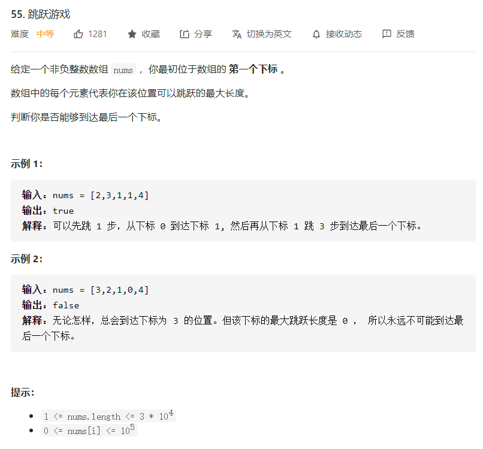
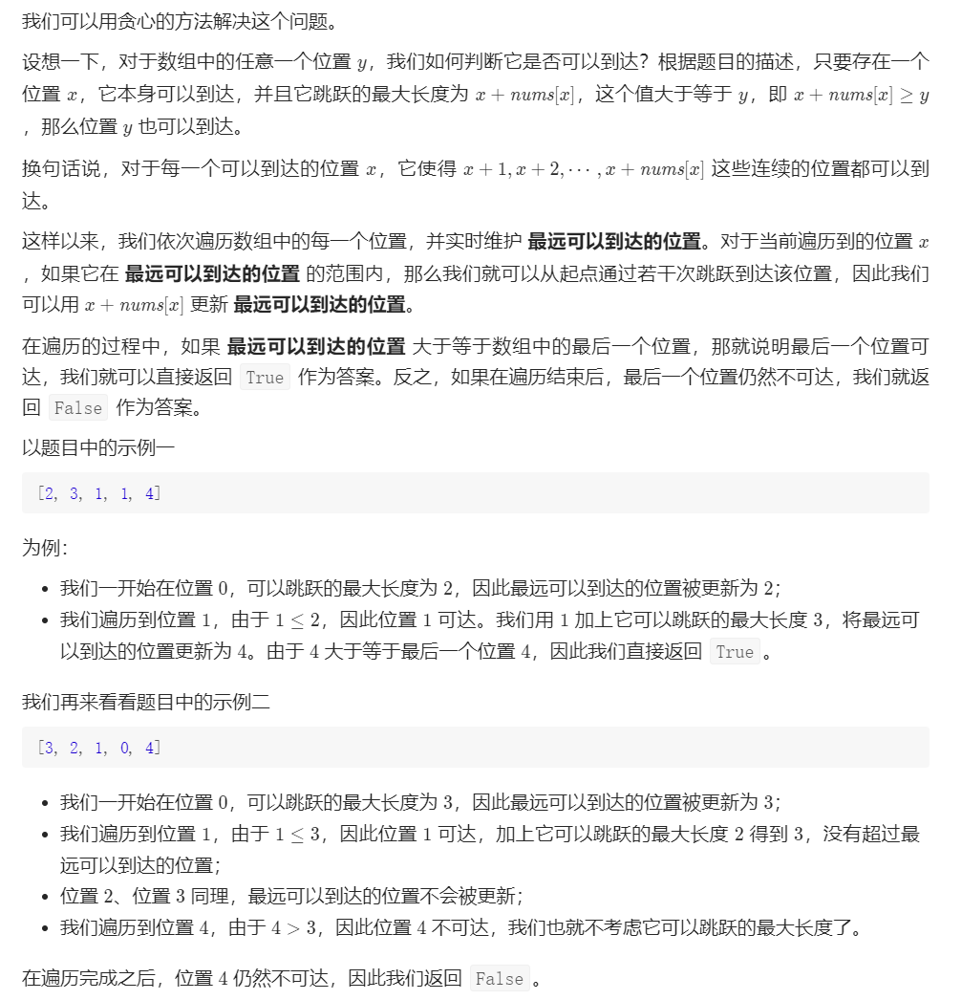
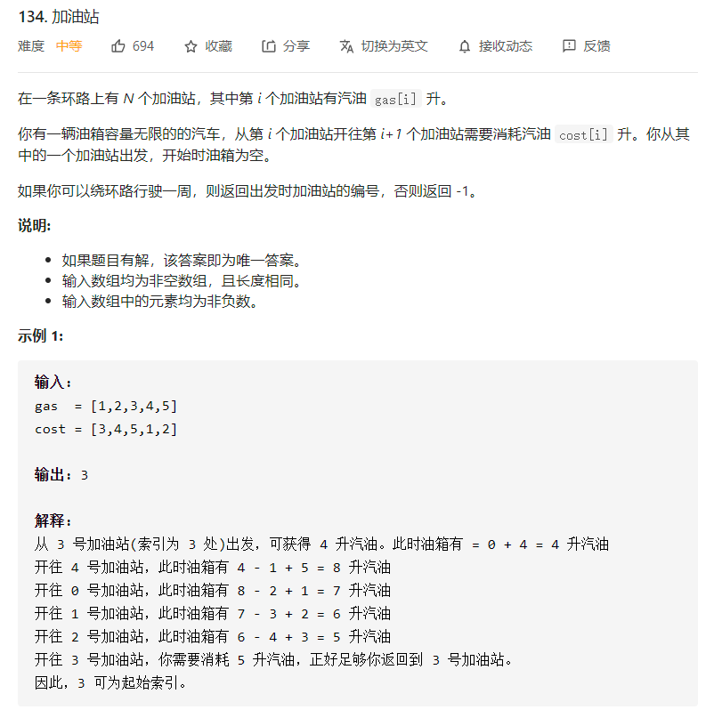
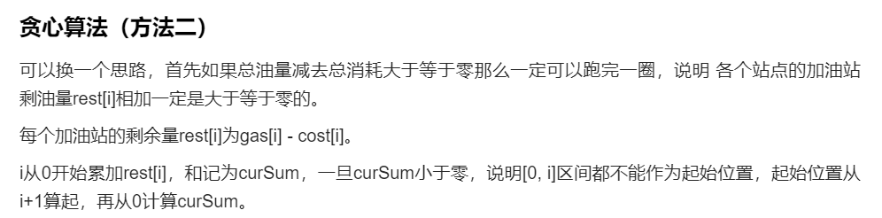

最优化问题的结果需要用一个 n 元组来表示，如 $X=(x_1, x_2, x_3, …… ,x_n)$。
贪心法的执行一共需要 n 步，每一步都会确定 n 元组中的一个元素，并保证每一步选取的值都是局部最优的。在经过 n 步之后，一共选取了 n 个值，每个值都是局部最优的，最终我们就可以认为这 n 个局部最优的值是整体最优的。那么，在每一步中，究竟通过怎样的策略来选取一个当前局部最优解呢？这个选取策略就叫做『最优量度标准』（也叫做贪心准则）。最优量度标准选择的好坏，直接影响最终的结果是不是整体最优。而最优量度标准的选择往往是根据经验来确定的，也就是并不是所有的最优量度标准都能达到整体最优。所以你选取的那个最优量度标准能否导致整体最优，这是需要额外证明的。
0.1.2 贪心算法原型
1 2 3 4 5 6 7 8 9 10 11 12 13 14 15
SolutionType greedy(int[] a){ // 一开始结果集为空 SolutionType solution = {}; // 进行n步选值 for ( int i=0; i<n; i++ ) { // 选出当前局部最优解x x = select(a); // 判断x是否满足约束条件，若不满足则继续选 while( !isFeasible(x) ){ x = select(a); } // 将当前最优解添加至结果集中 solution.add(x); } }
funcjump(nums []int)int { length := len(nums) end := 0 maxPosition := 0 steps := 0 for i := 0; i < length - 1; i++ { maxPosition = max(maxPosition, i + nums[i]) if i == end { end = maxPosition steps++ } } return steps }
funcmax(x, y int)int { if x > y { return x } return y }
LC55 跳跃游戏


1 2 3 4 5 6 7 8 9 10 11 12 13 14 15 16
classSolution { public: boolcanJump(vector<int>& nums){ int n = nums.size(); int rightmost = 0; for (int i = 0; i < n; ++i) { if (i <= rightmost) { rightmost = max(rightmost, i + nums[i]); if (rightmost >= n - 1) { returntrue; } } } returnfalse; } };
LC134 加油站


1 2 3 4 5 6 7 8 9 10 11 12 13 14 15 16 17 18
classSolution { public: intcanCompleteCircuit(vector<int>& gas, vector<int>& cost){ int curSum = 0; int totalSum = 0; int start = 0; for (int i = 0; i < gas.size(); i++) { curSum += gas[i] - cost[i]; totalSum += gas[i] - cost[i]; if (curSum < 0) { // 当前累加rest[i]和 curSum一旦小于0 start = i + 1; // 起始位置更新为i+1 curSum = 0; // curSum从0开始 } } if (totalSum < 0) return-1; // 说明怎么走都不可能跑一圈了 return start; } };
public: voiddfs(int pos, int rest){ if (rest == 0) { ans.push_back(sequence); return; } if (pos == freq.size() || rest < freq[pos].first) { return; }
dfs(pos + 1, rest);
int most = min(rest / freq[pos].first, freq[pos].second); for (int i = 1; i <= most; ++i) { sequence.push_back(freq[pos].first); dfs(pos + 1, rest - i * freq[pos].first); } for (int i = 1; i <= most; ++i) { sequence.pop_back(); } }
vector<vector<int>> combinationSum2(vector<int>& candidates, int target) { sort(candidates.begin(), candidates.end()); for (int num: candidates) { if (freq.empty() || num != freq.back().first) { freq.emplace_back(num, 1); } else { ++freq.back().second; } } dfs(0, target); return ans; } };
public List<List<Integer>> combine(int n, int k) { List<List<Integer>> res = new ArrayList<>(); if (k <= 0 || n < k) { return res; } Deque<Integer> path = new ArrayDeque<>(); dfs(n, k, 1, path, res); return res; }
privatevoiddfs(int n, int k, int index, Deque<Integer> path, List<List<Integer>> res){ if (path.size() == k) { res.add(new ArrayList<>(path)); return; }
// 只有这里 i <= n - (k - path.size()) + 1 与参考代码 1 不同 for (int i = index; i <= n - (k - path.size()) + 1; i++) { path.addLast(i); dfs(n, k, i + 1, path, res); path.removeLast(); } } }
funcgenerateTrees(n int) []*TreeNode { if n == 0 { returnnil } else { return backtrack(1, n) } }
funcbacktrack(start, end int) []*TreeNode { if start > end { return []*TreeNode{nil} } trees := make([]*TreeNode, 0) for i := start; i <= end; i++ { left := backtrack(start, i-1) right := backtrack(i+1, end) for _, l := range left { for _, r := range right { curr := &TreeNode{i, nil, nil} curr.Left = l curr.Right = r trees = append(trees, curr) } } } return trees }
funccanFinish(numCourses int, prerequisites [][]int)bool { degree := make([]int, numCourses) edges := make([][]int, numCourses) for i := range edges { edges[i] = []int{} } for _, prerequisite := range prerequisites { edges[prerequisite[1]] = append(edges[prerequisite[1]], prerequisite[0]) degree[prerequisite[0]]++ } queue := make([]int, 0) for i := 0; i < numCourses; i++ { if degree[i] == 0 { queue = append(queue, i) } } forlen(queue) != 0 { cur := queue[0] queue = queue[1:] for _, v := range edges[cur] { degree[v]-- if degree[v] == 0 { queue = append(queue, v) } } } for _, v := range degree { if v != 0 { returnfalse } } returntrue }
3 线段树
3.1 线段树概述
1 2 3 4 5 6 7 8 9 10 11 12 13
voidbuild(int s, int t, int p){ // 对 [s,t] 区间建立线段树,当前根的编号为 p if (s == t) { d[p] = a[s]; return; } int m = s + ((t - s) >> 1); // 移位运算符的优先级小于加减法，所以加上括号 // 如果写成 (s + t) >> 1 可能会时间超限 build(s, m, p * 2), build(m + 1, t, p * 2 + 1); // 递归对左右区间建树 d[p] = d[p * 2] + d[(p * 2) + 1]; }
1 2 3 4 5 6 7 8 9 10 11
intgetsum(int l, int r, int s, int t, int p){ // [l,r] 为查询区间,[s,t] 为当前节点包含的区间,p 为当前节点的编号 if (l <= s && t <= r) return d[p]; // 当前区间为询问区间的子集时直接返回当前区间的和 int m = s + ((t - s) >> 1), sum = 0; if (l <= m) sum += getsum(l, r, s, m, p * 2); // 如果左儿子代表的区间 [l,m] 与询问区间有交集,则递归查询左儿子 if (r > m) sum += getsum(l, r, m + 1, t, p * 2 + 1); // 如果右儿子代表的区间 [m+1,r] 与询问区间有交集,则递归查询右儿子 return sum; }
1 2 3 4 5 6 7 8 9 10 11 12 13 14 15 16 17 18 19
// 区间修改（区间加上某个值） voidupdate(int l, int r, int c, int s, int t, int p){ // [l,r] 为修改区间,c 为被修改的元素的变化量,[s,t] 为当前节点包含的区间,p // 为当前节点的编号 if (l <= s && t <= r) { d[p] += (t - s + 1) * c, b[p] += c; return; } // 当前区间为修改区间的子集时直接修改当前节点的值,然后打标记,结束修改 int m = s + ((t - s) >> 1); if (b[p] && s != t) { // 如果当前节点的懒标记非空,则更新当前节点两个子节点的值和懒标记值 d[p * 2] += b[p] * (m - s + 1), d[p * 2 + 1] += b[p] * (t - m); b[p * 2] += b[p], b[p * 2 + 1] += b[p]; // 将标记下传给子节点 b[p] = 0; // 清空当前节点的标记 } if (l <= m) update(l, r, c, s, m, p * 2); if (r > m) update(l, r, c, m + 1, t, p * 2 + 1); d[p] = d[p * 2] + d[p * 2 + 1]; }
1 2 3 4 5 6 7 8 9 10 11 12 13 14 15 16 17
// 区间查询（区间求和） intgetsum(int l, int r, int s, int t, int p){ // [l,r] 为查询区间,[s,t] 为当前节点包含的区间,p为当前节点的编号 if (l <= s && t <= r) return d[p]; // 当前区间为询问区间的子集时直接返回当前区间的和 int m = s + ((t - s) >> 1); if (b[p]) { // 如果当前节点的懒标记非空,则更新当前节点两个子节点的值和懒标记值 d[p * 2] += b[p] * (m - s + 1), d[p * 2 + 1] += b[p] * (t - m), b[p * 2] += b[p], b[p * 2 + 1] += b[p]; // 将标记下传给子节点 b[p] = 0; // 清空当前节点的标记 } int sum = 0; if (l <= m) sum = getsum(l, r, s, m, p * 2); if (r > m) sum += getsum(l, r, m + 1, t, p * 2 + 1); return sum; }
// 如果你是要实现区间修改为某一个值而不是加上某一个值的话，代码如下 voidupdate(int l, int r, int c, int s, int t, int p){ if (l <= s && t <= r) { d[p] = (t - s + 1) * c, b[p] = c; return; } int m = s + ((t - s) >> 1); if (b[p]) { d[p * 2] = b[p] * (m - s + 1), d[p * 2 + 1] = b[p] * (t - m), b[p * 2] = b[p * 2 + 1] = b[p]; b[p] = 0; } if (l <= m) update(l, r, c, s, m, p * 2); if (r > m) update(l, r, c, m + 1, t, p * 2 + 1); d[p] = d[p * 2] + d[p * 2 + 1]; } intgetsum(int l, int r, int s, int t, int p){ if (l <= s && t <= r) return d[p]; int m = s + ((t - s) >> 1); if (b[p]) { d[p * 2] = b[p] * (m - s + 1), d[p * 2 + 1] = b[p] * (t - m), b[p * 2] = b[p * 2 + 1] = b[p]; b[p] = 0; } int sum = 0; if (l <= m) sum = getsum(l, r, s, m, p * 2); if (r > m) sum += getsum(l, r, m + 1, t, p * 2 + 1); return sum; }
3.2 线段树实现
二叉树的节点区间定义，[start, end]代表节点的区间范围，max 是节点在[start, end]区间上的最大值 left , right 是当前节点区间划分之后的左右节点区间：
1 2 3 4 5 6 7 8 9 10 11 12 13 14
// 节点区间定义 // [start, end] 代表节点的区间范围 // max 是节点在(start,end)区间上的最大值 // left , right 是当前节点区间划分之后的左右节点区间 publicclassSegmentTreeNode{ publicint start, end, max; public SegmentTreeNode left, right; publicSegmentTreeNode(int start, int end, int max){ this.start = start; this.end = end; this.max = max this.left = this.right = null; } }
classSolution { public: /** * @param A: a list of integer * @return: The root of Segment Tree */ SegmentTreeNode *build(std::vector<int> &A) { // write your code here returnbuildhelper(0, A.size() - 1, A); }
/** * @param start: start index * @param end: end index * @param A: a list of integer * @return: SegmentTreeNode* The root of Segment Tree */ SegmentTreeNode *buildhelper(int start, int end, std::vector<int> &A) { if (start > end) { returnnullptr; } SegmentTreeNode *root = newSegmentTreeNode(start, end, INT_MIN); if (start == end) { root->max = A[start]; } else { int mid = (start + end) >> 1; root->left = buildhelper(start, mid, A); root->right = buildhelper(mid + 1, end, A); // 如果是求和型，这里换成加号就完事了！ root->max = std::max(root->left->max, root->right->max); } return root; } };
classSolution { public: /* you may need to use some attributes here */ SegmentTree *tree;
/** * @param A: An integer array */ Solution(std::vector<int> A) { // do intialization if necessary tree = newSegmentTree(A); }
/** * @param start: An integer * @param end: An integer * @return: The sum from start to end */ int64_tquery(int start, int end) { // write your code here tree->query(start, end); }
/** * @param index: An integer * @param value: An integer * @return: nothing */ voidmodify(int index, int value) { // write your code here tree->modify(index, value); } };
classSolution { public: /** * @param A: The prices [i] * @param k: * @return: The ans array */ std::vector<int> business(std::vector<int> &A, int k) { std::vector<int> ret; SegmentTree *root = newSegmentTree(A); int len = A.size(); for(int i = 0; i < len; ++i) { int left = std::max(0, i - k); int right = std::min(i + k, len - 1); int max = A[i] - root->query(left, right); ret.emplace_back(std::max(max, 0)); } return ret; } };
funcsubarraySum(nums []int, k int)(ret int) { cumsum := 0 mp := make(map[int]int, len(nums)+1) mp[0] = 1 for _, num := range nums { cumsum += num if _, ok := mp[cumsum-k]; ok { ret += mp[cumsum-k] } mp[cumsum] += 1 } return }
LC974 和可被 K 整除的子数组
1 2 3 4 5 6 7 8 9 10 11 12 13 14
// 同余类的简单应用 funcsubarraysDivByK(nums []int, k int)int { mp := map[int]int{0: 1} cumsum := 0 for _, num := range nums { cumsum += num mp[(cumsum%k+k)%k]++ } ret := 0 for _, v := range mp { ret += (v - 1) * v / 2 } return ret }
funcmaxFrequency(nums []int, k int)int { sum := []int{0} sort.Ints(nums) for i := 1; i <= len(nums); i++ { sum = append(sum, sum[i-1]+nums[i-1]) }
checker := func(sum []int, n int, k int)bool { for l := 0; l+n-1 < len(sum)-1; l++ { r := l + n - 1 cur := sum[r+1] - sum[l] t := nums[r] * n if t-cur <= k { returntrue } } returnfalse }
l, r := 0, len(nums) for l < r { m := (l + r + 1) >> 1 if checker(sum, m, k) { l = m } else { r = m - 1 } } return r }
funcsubarraySum(nums []int, target int)(ans int) { mp := map[int]int{} mp[0] = 1 prv := 0 for _, num := range nums { prv += num if _, ok := mp[prv-target]; ok { ans += mp[prv-target] } mp[prv]++ } return }
funcnumSubmatrixSumTarget(matrix [][]int, target int)(ans int) { m, n := len(matrix), len(matrix[0]) for i := 0; i < m; i++ { sum := make([]int, n) for j := i; j < m; j++ { for c := 0; c < n; c++ { sum[c] += matrix[j][c] } ans += subarraySum(sum, target) } } return }
intmaxPathSum(TreeNode *root) { int _ = getGain(root); returnthis->ans; }
intgetGain(TreeNode *root) { if (!root) return0; int l = getGain(root->left); int r = getGain(root->right); l = (l > 0)? l: 0; r = (r > 0)? r: 0; ans = (ans < l + r + root->val)? l + r + root->val: ans; return root->val + std::max(l, r); } };